Non Historical Arguments
This page looks at Christianity from a non-historical point of view.
It doesn't pretend to be exhaustive on the matter.
Looking closer, besides history, Christianity contains a lot of dogmas and beliefs that can be investigated by science & philosophy.
All of them create an edifice that looks very much like an unstable castle of cards:
- Existence of an Omnipotent, Omniscient and Omnipresent God.
- Existence of an afterlife where heaven and hell exist.
- Existence of a judge that will decide your fate there.
- Jesus Death is a blood sacrifice freeing Humans from sins.
- The veracity of the Old Testament.
- The moral & ethics teached by the Bible is divine.
- God has created all life.
- You can travel through heavens that lie just above your head.
- There will be a judgment day.
- Resurrection of the flesh.
- You can eat the flesh and drink the blood of Jesus.
- Pouring water on your head is a necessary step for salvation.
- Sins and the original sin exist.
- Prayer works.
- Demons exist.
- ...
All these beliefs are linked together and depend on each other.
Remove several of them and the edifice collapses entirely.
But here, none of them stand!
To judge some Christian claims, we may use these kind of rules:
- "Entities must not be multiplied beyond necessity".
the Occam's razor
- "What can be asserted without evidence can also be dismissed without evidence."
Hitchens's razor
- “Extraordinary claims require extraordinary evidence”
C. Sagan
The Bible is not the word of God
"The Bible does not contain a single sentence that could not
have been written by a man or woman living in the first century."
Sam Harris Letter to a Christian Nation
- Many Contradictions, Interpolations, Mistranslations and Variations.
- Jesus/God is often wrong
-
"Jesus is depicted in the Gospels repeatedly acting as if Moses and the Patriarchs existed, yet archaeology has confirmed they did not. They were mythical constructs of later Jews who wanted to symbolize and explain their values, rituals, and beliefs by weaving stories articulating those views (see OT Collapse). Just like all other national mythologies."R. Carrier Five Bogus Reasons to Trust the Bible
- Jesus' obsession with demons, talking to them and fighting them.
"“Be quiet!” said Jesus sternly. “Come out of him!”
The impure spirit shook the man violently and came out of him with a shriek."Mark 1:25-26"For Jesus had said to him, “Come out of this man, you impure spirit!”
... The demons begged Jesus, “Send us among the pigs; allow us to go into them.”
He gave them permission, and the impure spirits came out and went into the pigs. The herd, about two thousand in number, rushed down the steep bank into the lake and were drowned."Mark 5:8-13"Then he told her, “For such a reply, you may go; the demon has left your daughter.”
She went home and found her child lying on the bed, and the demon gone."Mark 7:29-30... - Jesus is angry and violent against the Jewish authorities & priests in the temple,
while they were doing nothing wrong."And as he taught them, he said,
“Is it not written: ‘My house will be called a house of prayer for all nations’? But you have made it ‘a den of robbers.’”"Mark 11:17"First of all, and in general, there was absolutely nothing wrong with any of the buying and selling, or money-changing operations conducted in the outer courts of the Temple. Nobody was stealing or defrauding or contaminating the sacred precincts. These activities were the absolutely necessary concomitants of the fiscal basis and sacrificial purpose of the Temple."J. D. Crossan - Jesus is against washing your hands or utensils prior to eating,
and says that nothing bad can enter you if you don’t,
while "Frequent hand-washing is the single-most important means of disease prevention." slogan from the US the Center for Disease Control."Then the Pharisees and scribes asked him, Why walk not thy disciples according to the tradition of the elders, but eat bread with unwashen hands?Mark 7:1-19
He answered and said unto them, Well hath Esaias prophesied of you hypocrites, as it is written, This people honoureth me with their lips, but their heart is far from me.
...There is nothing from without a man, that entering into him can defile him: but the things which come out of him, those are they that defile the man.""These are what defile a person; but eating with unwashed hands does not defile them."Matthew 15:20"Jesus specifically dismissed the ONE hygienic practice that later was PROVEN to be beneficial (and hand-washing actually SAVES countless lives). But just so there was no ambiguity or confusion over his position, Jesus even called a large crowd to hear him repeat his diatribe: Jesus was going 'all in' on the point."Why Did Jesus Object To Washing Hands Before Eating? - Like Aristotle and ancient Egyptians (2,000 BCE), Jesus said humans think with their hearts, not their brains.
"But the things that come out of a person’s mouth come from the heart, and these defile them. For out of the heart come evil thoughts—murder, adultery, sexual immorality, theft, false testimony, slander."Matthew 15:18A typical Christian apologist will say that Jesus was using the 'thoughts of the heart' as a figure of speech!
Maybe, but never anywhere in the Bible does he give a hint for this possibility. Knowing that it was a common misconception of the time, he should have specified this distinction had he thought otherwise.
The Message of the OTIrrelevant Horrible
LawImmoral Cruel Irrelevant"Academic biblical scholarship has clearly succeeded in showing that the ancient civilization that produced the Bible held beliefs about the origin, nature, and purpose of the world and humanity that are fundamentally opposed to the views of modern society. The Bible is thus largely irrelevant to the needs and concerns of contemporary human beings."See H. Avalos A Self-Preservation Agenda in chapter 1. Were are we today?
An Ordinary book lacking any essential understanding"Why doesn't the Bible say anything about electricity, or about DNA, or about the actual age and size of the universe? What about a cure for cancer? When we fully understand the biology of cancer, this understanding will be easily summarized in a few pages of text. Why aren't these pages, or anything remotely like them, found in the Bible? Good, pious people are dying horribly from cancer at this very moment, and many of them are children. The Bible is a very big book. God had room to instruct us in great detail about how to keep slaves and sacrifice a wide variety of animals [to himself!]. To one who stands outside the Christian faith, it is utterly astonishing how ordinary a book can be and still be thought the product of omniscience."Sam Harris Letter to a Christian NationSuperfluous, Obscur, Ambiguous and IllogicalIn Sense and Goodness Without God, Richard Carrier described what he found in the Bible."In general, no divinely inspired text would be so long and rambling and hard to understand. Wise men speak clearly, brillantly, their ability at communication is measured by their succes at making themselves readily understood. The Bible spans over a thousand pages of tiny, multi-columned text, and yet says nowhere near as much, certainly nothing as well, as the Tao Te Ching does in a mere eighty-one stanzas.The Bible is full of the superfluous- extensive genealogies of no relevance to the meaning of life or the nature of the universe,
- long disgressions on barbaric rituals of bloodletting,
- taboo that have nothing to do with being a good person or advancing society toward greater happiness,
- lengthy diatribes against long-dead nations,
- constant harping on a coming and gloom.
I asked myself: would any wise, compassionate being even allow this book to be attributed to him, much less be its author? Certainly not. How could Lao Tzu, a mere mortal, who never claimed any superior powers or status, write better, more thoroughly, more concisely, about so much more, than the Inspired Prophets of God?...The Bible is plagued with a general obscurity and ambiguity, and illogicality, which I had already noted as a child, and though I did understand more and saw it as less confused than I once had, the improvement was minimal and not encouraging. It still taught a morality that is unlivable, and above all contained hardly a hint of humor or any mature acceptance of sexuality or anything distinctly and naturally human....Though called a wise father, there is not a single example in the Old Testament of God sitting down and kindly teaching anyone...Horrible Law"The Bible is good, the problem comes from the people who interpret and use it"
A common popular beliefIn the discussion forum of the Cercle Zététique (the link is now broken as the forum doesn't exist anymore although this page Jésus: info ou intox? is still there), a member called Phif reminded us an idea commonly accepted by a majority of people today:"I would say that there is a huge number of wisdom teachings in the Bible. It's far from being an accumulation of idiocies! When you forget about the mystic part, there is still a philosophy that praises essential values for the cohesion of a society and men: love, generosity, non-violence, altruism, etc..."So, for Phif, there is no stupidity in the Bible, but just some people who didn't understand it and wrongly interpreted it:"The stupidity resides more in my opinion in its interpretation and in what man is doing with it. All the horrors committed in the name of the Catholic religion have not been done in the name of the Bible, but its interpretation (i.e. the religion)!"Phif even extends this problem of textual interpretation to all religions:"We should not criticize the Bible, the Quran, or the Torah but more how it is used."Phif was answering my message 'Is our biblical idolatry justified? that was giving plenty of examples where the Bible itself is terrible. Weirdly, he totally ignored it, as he didn't support his claims by giving any evidence either.Finally Phif concluded his message by:"the world would be a much better place if everyone follow the philosophy of the Bible, or any other 'sacred' text"Another common popular beliefSo, let's scientifically investigate this belief:What would happen to the world if we follow the philosophy of the Bible?The text below is taken from the video
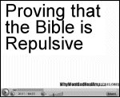
Preamble: The humility of the Bible. The Law of the Lord is perfect:"The grass withereth, the flower fadeth: but the word of our God shall stand for ever."Isaiah 40:8, 1 Peter 1:24-25"The law of the LORD is perfect, refreshing the soul.
The testimony of the LORD is sure, making wise the simple.
The precepts of the LORD are right, giving joy to the heart.
The commands of the LORD are radiant, giving light to the eyes.
The fear of the LORD is pure, enduring forever.
The decrees of the LORD are firm, and all of them are righteous."Psalm 19:7-91 - Wedding & VirginityIn 2008 in Lille (France), a muslim asked for the cancellation of his wedding because his bride was not a virgin during the wedding night. A complex point to rule juridically by the French law: 2008 French mistaken virginity case. Finally, French justice took sides for the bride Virgin bride not 'essential' to marriage, French court rules - CBC."If a man takes a wife and, after sleeping with her, dislikes her and slanders her and gives her a bad name, saying, “I married this woman, but when I approached her, I did not find proof of her virginity,” then the young woman’s father and mother shall bring to the town elders at the gate proof that she was a virgin....If, however, the charge is true and no proof of the young woman’s virginity can be found, she shall be brought to the door of her father’s house and there the men of her town shall stone her to death. She has done an outrageous thing in Israel by being promiscuous while still in her father’s house. You must purge the evil from among you."Deuteronomy 22:13-212 - AdulteryThere is no law against adultery in nearly all developed countries (or these laws are not applied)."If a man be found lying with a woman married to an husband, then they shall both of them die, both the man that lay with the woman, and the woman: so shalt thou put away evil from Israel.
If a damsel that is a virgin be betrothed unto an husband, and a man find her in the city, and lie with her; Then ye shall bring them both out unto the gate of that city, and ye shall stone them with stones that they die; the damsel, because she cried not, being in the city; and the man, because he hath humbled his neighbour's wife: so thou shalt put away evil from among you."Deuteronomy 22:22-24"If a man commits adultery with another man’s wife—with the wife of his neighbor— both the adulterer and the adulteress are to be put to death."Leviticus 20:103 - HomosexualityThere is no law against homosexuality in any developed country. We have even progressed a lot lately on the matter:- between 2001 (Netherlands) and 2023, 33 states have legalized, either partially or in full, same-sex marriages.
- many antidiscrimination laws have also been voted on.
"If a man also lie with mankind, as he lieth with a woman, both of them have committed an abomination: they shall surely be put to death; their blood shall be upon them."Leviticus 20:13"You shall not lie with a male as with a woman. It is an abomination”"Leviticus 18:22Or even cross dressing:"The woman shall not wear that which pertaineth unto a man, neither shall a man put on a woman's garment: for all that do so are abomination unto the Lord thy God.Deuteronomy 22:5Notice that before Christianity and Islam, practices and rituals for same-sex unions were recognized in Ancient Greece and Rome, ancient Mesopotamia and a little bit everywhere else. They became outlawed and crimes punishable by death in 342 AD by the Christian emperors Constantius II and Constans.4 - Working the SundayUnder special conditions, most developed countries can authorize some companies to ask some of their employees to work on Sunday. Any intrusion is only liable to a fine. Of course, anyone is free to work personally on this day if he wants to."Remember the Sabbath day by keeping it holy. Six days you shall labor and do all your work, but the seventh day is a sabbath to the Lord your God. On it you shall not do any work, neither you, nor your son or daughter, nor your male or female servant, nor your animals, nor any foreigner residing in your towns."Exodus 20:8-10"Six days may work be done; but in the seventh is the sabbath of rest, holy to the LORD:
whosoever doeth any work in the sabbath day, he shall surely be put to death."Exodus 31:155 - Believing in other GodsAll developed countries guarantee full freedom in the matter of religious belief."Then shalt thou bring forth that man or that woman, which have committed that wicked thing, unto thy gates, even that man or that woman, ... and shalt stone them with stones, till they die. At the mouth of two witnesses, or three witnesses, shall he that is worthy of death be put to death; but at the mouth of one witness he shall not be put to death. ... The hands of the witnesses shall be first upon him to put him to death, and afterward the hands of all the people. So thou shalt put the evil away from among you."Deuteronomy 17:5-7"Thou shalt have no other gods before me."Exodus 20:3"If thy brother, the son of thy mother, or thy son, or thy daughter, or the wife of thy bosom, or thy friend, Namely, of the gods of the people which are round about you, nigh unto thee, or far off from thee, which is as thine own soul, entice thee secretly, saying, Let us go and serve other gods, which thou hast not known, thou, nor thy fathers; from the one end of the earth even unto the other end of the earth; ... Thou shalt not consent unto him, nor hearken unto him; neither shall thine eye pity him, neither shalt thou spare, neither shalt thou conceal him: But thou shalt surely kill him; thine hand shall be first upon him to put him to death, and afterwards the hand of all the people. And thou shalt stone him with stones, that he die; ... because he hath sought to thrust thee away from the LORD thy God, which brought thee out of the land of Egypt, from the house of bondage. And all Israel shall hear, and fear, and shall do no more any such wickedness as this is among you."Deuteronomy 13:6-11"Thou shalt surely smite the inhabitants of that city with the edge of the sword, destroying it utterly, and all that is therein, and the cattle thereof, with the edge of the sword. And thou shalt gather all the spoil of it into the midst of the street thereof, and shalt burn with fire the city, and all the spoil thereof every whit, for the LORD thy God: and it shall be an heap for ever; it shall not be built again."Deuteronomy 13:15-166 - Curse your parentsNo law against it in any developed country."For every one that curseth his father or his mother shall be surely put to death: he hath cursed his father or his mother; his blood shall be upon him."Leviticus 20:97 - Disobedient ChildrenFrench law doesn't say anything about it."If a man have a stubborn and rebellious son, which will not obey the voice of his father, or the voice of his mother, and that, when they have chastened him, will not hearken unto them: Then shall his father and his mother lay hold on him, and bring him out unto the elders of his city, and unto the gate of his place; And they shall say unto the elders of his city, This our son is stubborn and rebellious, he will not obey our voice; he is a glutton, and a drunkard. And all the men of his city shall stone him with stones, that he die: so shalt thou put evil away from among you; and all Israel shall hear, and fear."Deuteronomy 21:18-218 - To sin by your hand, foot or eyeThe concept of 'sin' doesn't exist in French law."Wherefore if thy hand or thy foot offend thee, cut them off, and cast them from thee: it is better for thee to enter into life halt or maimed, rather than having two hands or two feet to be cast into everlasting fire. And if thine eye offend thee, pluck it out, and cast it from thee : it is better for thee to enter into life with one eye, rather than having two eyes to be cast into hell fire."Matthew 18:8-99 - Equality Man-WomanFrench law enforces equality."Let your women keep silence in the churches: for it is not permitted unto them to speak; but they are commanded to be under obedience as also saith the law. And if they will learn any thing, let them ask their husbands at home: for it is a shame for women to speak in the church.."1 Corinthians 14:34-35"Let the woman learn in silence with all subjection. But I suffer not a woman to teach, nor to usurp authority over the man, but to be in silence. For Adam was first formed, then Eve. And Adam was not deceived, but the woman being deceived was in the transgression."1 Timothy 2:11-1410 - SlaveryForbidden in any country."Both thy bondmen, and thy bondmaids, which thou shalt have, shall be of the heathen that are round about you; of them shall ye buy bondmen and bondmaids. Moreover of the children of the strangers that do sojourn among you, of them shall ye buy, and of their families that are with you, which they begat in your land: and they shall be your possession. And ye shall take them as an inheritance for your children after you, to inherit them for a possession; they shall be your bondmen for ever.Leviticus 25:44-46"And if a man smite his servant, or his maid, with a rod, and he die under his hand; he shall be surely punished. Notwithstanding, if he continue a day or two, he shall not be punished: for he is his money."Exodus 21:20-21"Exhort servants to be obedient unto their own masters, and to please them well in all things; not answering again; Not purloining, but shewing all good fidelity; that they may adorn the doctrine of God our Saviour in all things."Titus 2:9-10The Bible fully supports slavery and has been used in many cases to defend it:- To buy and sell slaves is normal
- To beat and torture slaves is fine as long as he (she) doesn't die
- Slaves are to show entire and true fidelity to their master
11 - BlasphemyNo law against it."And he that blasphemeth the name of the LORD, he shall surely be put to death, and all the congregation shall certainly stone him: as well the stranger, as he that is born in the land, when he blasphemeth the name of the Lord, shall be put to death."Leviticus 24:16
The Law of the Bible clearly commands us to:
- Kill any adulterous man or woman
- Kill any woman not a virgin the day of her wedding
- Kill anyone who works the Sunday
- Kill any teenager who has drunk too much
- Enslave people of other nations
- Oppress Women
- Kill homosexuals
- ...
Any religion based on such a book has no place in our societies.ImmoralOur moral progress is independent of the Bible or despite it:- The Ten Commandments
3 can be found in the laws of any modern nation, both religious or secular:- Do not kill
- Do not steal
- Do not bear false witness against thy neighbour
3 others can be considered good advice, but they are not laws in modern countries:- Honor your parents
- Do not commit adultery
- Do not desire another's wife or anything that belongs to another
4 have nothing to do with morality:- Have no other gods before me
- Do not make unto thee any graven image
- Do not use the name of the Lord thy God in vain
- Do not work on the Sabbath
Today, anyone would find 10 better commandments.
How can we be more moral than the God of the Bible? - The moral Bonobo
Primate animal groups, including in our closest relatives, the chimpanzees, who have never read a word of scripture can be seen as having developed high moral grounds. And other species, distant from us, also show behaviors that look altruistic (whales, dolphins, dogs, and so on). Thus, the idea of evolutionary “roots” of human morality–roots discerned in behaviors like empathy, altruism, and concern for equity–is well supported in other intelligent beings in the animal kingdom. -
Richard Dawkins On the shifting moral zeitgeist.
About women“To embrace the dominant biblical view of women would be to embrace the marginalization of women. And sacralizing patriarchy is just wrong… So, the next time someone refers to ‘biblical values,’ it's worth mentioning to them that the Bible often marginalized women and that's not something anyone should value.”Christopher Rollston who got fired for having said that.Cruel"I looked in horror at the demonic monster being portrayed here. He was worthy of universal condemnation, not workship. He who thinks he can do whatever he wants because he can is as loathsome and untrustworthy as any psychopath.It was bad enough that this God's idea of the "best" in man is a willingness to murder one's own child in demand. It is inconceivable that any kind being would ever test Abraham's loyalty that way. To the contrary, from any compassionate point of view, Abraham failed this test: he was willing to kill for faith, setting morality aside for God. A decent being would reward instead the man who responded to such a request with "Go to hell! Only a demon would ask such a thing, and no compassionate man would do it". But the Bible message is exactly the opposite. How frightening.It was no surprise, then, to find that this same cruel god- orders people to be stoned to death for picking up sticks on Saturday (Numbers 15:32-36)
- and commands those who follow other religions be slaughtered (Deuteronomy 13:6-16)
Indeed, genocide (Deuteronomy 2:31-34, 7:1-2, 20:10-15, and Joshua, e.g. 10:33) and facism (Deuteronomy 22:23-24, Leviticus 20:13, 24:13-16, Numbers 15:32-6) were the very law and standard practice of God, right next to the Ten Commandments. Instead of condemning slavery, God condones it (Leviticus 25:44, cf Deuteronomy 5:13-14, 21:10-13).
And so on. All fairly repugnant.I could go on at length about the many horrible passages that praise the immoral, the cruel, as the height of righteous goodness. It does no good to try in desperation to make excuses for it. A good and wise man's message would not need such excuses. It follows that the Bible was written neither by the wise nor the good.And the New Testament was only marginally better, though it too had its inexcusable features..."Richard Carrier Sense and Goodness Without GodApocalypse Now"They come from a far country, from the end of heaven, even the LORD, and the weapons of his indignation, to destroy the whole land. Howl ye; for the day of the LORD is at hand; it shall come as a destruction from the Almighty. Therefore shall all hands be faint, and every man's heart shall melt:
And they shall be afraid: pangs and sorrows shall take hold of them; they shall be in pain as a woman that travaileth: they shall be amazed one at another; their faces shall be as flames. Behold, the day of the LORD cometh, cruel both with wrath and fierce anger, to lay the land desolate: and he shall destroy the sinners thereof out of it.
...
Every one that is found shall be thrust through; and every one that is joined unto them shall fall by the sword. Their children also shall be dashed to pieces before their eyes; their houses shall be spoiled, and their wives ravished."Isaiah 13:5-15"Samaria shall become desolate; for she hath rebelled against her God: they shall fall by the sword: their infants shall be dashed in pieces, and their women with child shall be ripped up."Hosea 13:16"And they warred against the Midianites, as the LORD commanded Moses; and they slew all the males.
And they slew the kings of Midian, beside the rest of them that were slain; namely, Evi, and Rekem, and Zur, and Hur, and Reba, five kings of Midian: Balaam also the son of Beor they slew with the sword.
And the children of Israel took all the women of Midian captives, and their little ones, and took the spoil of all their cattle, and all their flocks, and all their goods. And they burnt all their cities wherein they dwelt, and all their goodly castles, with fire. And they took all the spoil, and all the prey, both of men and of beasts.
...
And Moses was wroth with the officers of the host...
And Moses said unto them, Have ye saved all the women alive?...
Now therefore kill every male among the little ones, and kill every woman that hath known man by lying with him. But all the women children, that have not known a man by lying with him, keep alive for yourselves."Numbers 31:7-18It is always a surprise for me to see how much Christians ignore all that (or is it hypocrisy?). For example, in the summer of 2022, I visited a church in Brittany (France) with my sister who is a devout Christian. Inside, there was an exhibit of signs telling the main conducts we should have in front of God. My sister complained how silly was the one saying 'To Fear God'."Now fear the Lord and serve him with all faithfulness. Throw away the gods your ancestors worshiped beyond the Euphrates River and in Egypt, and serve the Lord."Joshua 24:14"It ain't those parts of the Bible thatMark Twain
I can't understand that bother me,
it is the parts that I do understand."The Message of JesusNothing
NewAbsurd Believe or
Be DamnedNothing NewWe have seen in chapter 1 Main Findings A Religion of Parallels how much Christianity has borrowed from the Jewish and Hellenic world. Particularly, the sayings of Jesus match their time and region.Cynic SayingsMany sayings of Jesus bear a strong resemblance to the spirit and style of a specific and widespread Hellenistic preaching movement of the time, that of the Cynics.See A Wandering Cynic Philosopher in chapter 4 about the Gospels.Kingdom of God SayingsIt was widespread among many Jewish sects at this time. Expectations of the future are expressed in two quite different ways:- One is found mainly in parables where the Kingdom will arrive peacefully, with a reversal of fortune.
- The other is blatantly apocalyptic with the Son of Man.
See A Prophet of the Kingdom of God in chapter 4 about the Gospels.Pagans as Good Christians"The Pagans would appear almost to have been good Christians:- they had their gods, (whom they fondly called Savior and Messiah)
- the death and resurrections of gods;
- devils, angels, and spirits good, bad and indifferent;
- their heavens, hells and purgatories;
- they believed in immortality of the soul, -witness the Pyramids and the tombs of the Kings, as of Tut-ankh-Amen in Egypt, and of the Queen Shub-Ad, just unearthed in Ur of the Chaldees;
- their elaborate sacrifices, animal and human, even of their dear little children to appease their gods, as in Carthage and Canaan, -a chronic Hebrew practice.
- Virgin-births of demigods by the intervention of gods and human maids were common-places of Pagan faith,
- as were Virgin-mothers and god-child: the Christians imported theirs from Egypt -the Madonna statues of Isis and the Child Horus- of universal vogue at the beginning of this era of the Christ -may be seen in almost any first-class Museum, as the Metropolitan in New York and the University in Philadelphia...
When Christianity was spreading across the Empire, it's clear that it deliberately took images from the pagan world in which it lived and into which it spread and used those images. Old holy wells and shrines were turned into Christian shrines. In Egypt a shrine of Isis was deliberately and self-consciously re-created as a shrine of Mary.One of the important cities for Mary was Ephesus, where the goddess Diana was worshipped. It's not surprising that Mary drew upon the imagery associated with the goddesses, because that was the imagery the people knew. In the same way, we have imagery of Christ with a triumphant crowd looking like an emperor.The most popular image of the virgin Mary is the one where Mary seats on a chair with the child on her knees.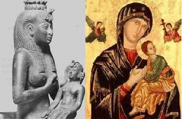
Isis nursing Horus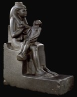
Ptolemaic dynastyFra Filippo Lippi
mid 1400s- The Pagans had their holy mysteries and sacraments,
- baptisms of water and of blood,
- communions with the gods at their sacred altars,
- partaking of sacred meals to ingest the divine spirit and become godlike.
- they believed in the resurrection of the dead,
- and in final judgments meting rewards and punishments according to the deeds done in the flesh, -the Egyptian Book of the Dead, 3000 years B.C., giving priestly prescriptions for use before the judgment seat of Osiris, is found in almost every tomb of those able to pay for the hieroglyphic papyrus rolls.
- The Pagans had their holy days (from which the Christians plagiarized their Christmas, Easter, Rogation Days, etc.);
- their monks, nuns, religious processions carrying images of idols (like those of saints today);
- incense, holy water, holy oil, chants,hymns, liturgies, confessions of sins to priests, forgiveness of sins by priests,
- revelations by gods to priests, prophecies, sacred writings of "holy bibles," Pontiffs, Holy Fathers, holy crafty priesthood.
All these sacrosanct things of Christian "Revealed Religion," were age-old pre-Christian Pagan myths and superstitions.I puzzle myself to understand how there could be "divine revelations," to Jews and Christians, of things which for ages had been identically ancient Pagan delusions and the inventions and common holy stock in trade of all Pagan priestcrafts. Indeed and in truth, there can be no divine revelation of miraculous "facts" and "heavenly dogmas" which for centuries had been, and in the early Christian ages were, the current mythology of credulous Pagandom. This I shall make exceeding clear."Joseph Wheless Is It God's Word? chapter 1"Many of the ideas of the Christians have been expressed better- and earlier- by the Greeks. Behind these views is an ancient doctrine that has existed from the beginning."Celsus The True Word (end of 2nd century opponent of Christianity)It was obvious to Celsus that Christianity and Mithraism were teaching the same doctrine, and that it had a lot of similarities with the platonic theology of the logos.AbsurdThe 10 directives given by Jesus to gain SalvationMany sayings of Jesus concern a highly mystical place called the 'Kingdom of God', including how to get there.The text below is taken from the video 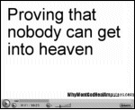
1 - Love God and your neighbor"You shall love the Lord your God with all your heart, and with all your soul, and with all your strength, and with all your mind; and your neighbor as yourself."
Luke 10:272 - Don't commit adultery, murder, stealing, lies, and honor father and mother"Do not commit adultery, Do not kill, Do not steal, Do not bear false witness, Honor your father and mother."Luke 18:203 - Sell everything"Sell all that you have and distribute to the poor, and you will have treasure in heaven"Luke 18:22"So therefore, whoever of you does not renounce all that he has cannot be my disciple."Luke 14:334 - Follow Jesus"and come, follow me."Luke 18:22"Whoever does not bear his own cross and come after me, cannot be my disciple."Luke 14:275 - Hate father, mother, children, brothers, sisters and even your own life"If any one comes to me and does not hate his own father and mother and wife and children and brothers and sisters, yes, and even his own life, he cannot be my disciple."Luke 14:266 - Eat the flesh and drink the blood of the Son of Man"Truly, truly, I say to you, unless you eat the flesh of the Son of man and drink his blood, you have no life in you; he who eats my flesh and drinks my blood has eternal life, and I will raise him up at the last day.John 6:53-58
For my flesh is food indeed, and my blood is drink indeed.
He who eats my flesh and drinks my blood abides in me, and I in him.
... he who eats me will live because of me.
... he who eats this bread will live for ever."7 - Become like little children"Truly, I say to you, unless you turn and become like children, you will never enter the kingdom of heaven."Matthew 18:38 - Be Born Again"Truly, truly, I say to you, unless one is born anew, he cannot see the kingdom of God.
... Truly, truly, I say to you, unless one is born of water and the Spirit, he cannot enter the kingdom of God.
...
Do not marvel that I said to you, 'You must be born anew.'
The wind blows where it wills, and you hear the sound of it, but you do not know whence it comes or whither it goes; so it is with every one who is born of the Spirit."John 3-8Notice that we know very well where the wind comes from and where it goes...9 - Follow the 613 laws of the Old TestamentMost of them are completely dumb like hundred of them that concern animal sacrifice."Think not that I have come to abolish the law and the prophets; I have come not to abolish them but to fulfil them.For truly, I say to you, till heaven and earth pass away, not an iota, not a dot, will pass from the law until all is accomplished.Whoever then relaxes one of the least of these commandments and teaches men so, shall be called least in the kingdom of heaven; but he who does them and teaches them shall be called great in the kingdom of heaven.For I tell you, unless your righteousness exceeds that of the scribes and Pharisees, you will never enter the kingdom of heaven."Matthew 5:17-20Pharisees were among those who were follwing the 'Law' the most carefully.10 - Believe in Jesus"For God so loved the world that he gave his only Son,
that whoever believes in him should not perish but have eternal life."John 3:16So, you need to:- Love everybody and hate everybody
- Be like a little kid and an adult Pharisee who stricly follows 613 ridiculous laws
- Eat flesh and drink blood
- Sell everything
- And the most important, have faith in Jesus
Believe or Be damnedA Mediocre Ethic"Christians like to claim that Jesus preached a doctrine of peace and love. However, principles of kindness [somewhat different than Cynicism] are far from representing the majority of the content of the New Testament. In reality, Christian commentators often ascribe to Jesus doctrines which are absent from the gospels.Although it is one of the commonplaces of present-day moralists that his teaching has promoted happy family life, this view is hard to reconcile with the texts where he encourages people to break up their families for religious reasons (Luke 14:26). Equally striking is the gospel disparagement of married life (Matthew 19:10-12). Paul's views on this subject are well known (1 Corinthians 7).And in Revelation 14:4 we are told that the men who will be saved are
"they which were not defiled with women, for they are virgins."If we read the Gospels in order to discover what standard of goodness they advocate, we find that they contain less ethical teaching than is commonly supposed. In Mark, there is practically none and the entire message of the Epistles is "Have Faith and Believe and you will be saved." The word 'faith' is mentioned 45 times in the Epistle to the Romans and 23 times in 6 pages of Galatians."And he said to them, "Go into all the world and preach the gospel to the whole creation. He who believes and is baptized will be saved; but he who does not believe will be condemned.""Mark 16:15-19It gets even worse during the final judgment"Then he will say to those on his left,Matthew 25:41.
'Depart from me, you who are cursed, into the eternal fire prepared for the devil and his angels...'"This doctrine of eternal punishment had been utterly rejected by Epictetus, Seneca and others. The inferiority of Christianity here is admitted with characteristic candor in the Encyclopaedia Biblica."On this ground, many Christians, even apologists, became heretics themselves. For Origen (185-254), it was because of his compassionate belief that all souls would eventually be redeemed.Inexcusable Features"And the New Testament was only marginally better [than the old], though it too had its inexcusable features:- from commands to hate (Luke 14:26) to arrogantly sexist teachings about women (1 Timothy 2:12)
- from Jesus saying he "came not to bring peace, but the sword",
- setting even families against each other (Matthew 10:34-36)
- and approving the murder of disobedient children (Mark 7:6-13),
- to making blasphemy the worst possible crime (Matthew 12:31-32), even worse than murder or molesting a child.
- It, too, supported slavery rather than condemning it (Luke 12:47, 1 Timothy 6:1-2).
Worse, its entire message is not "be good and go to heaven", itself a naive and childish concern (the good are good because they care, not because they want a reward), but "believe or be damned" (Mark 16:16, Matthew 10:33, Luke 12:9, John 3:18), a fundamentally wicked doctrine. The good judge others by their character, not their beliefs, and punish deeds, not thoughts, and punish only to teach, not to torture. But none of this moral truth was in the Bible, and the New Testament had none of the humanistic wisdom of the Tao Te Ching which speak to all ages, but instead drones on about subjection to kings and acceptance of slavery, while having no knowledge of the needs of a democratic society, the benefits of science, or the proper uses of technology. It even promotes superstition over science, with all its talk about demonic possession and faith healing and speaking in tongues, and assertions that believers will be immune to poison (Mark 16:17-18)."Richard Carrier Sense and Goodness Without GodIt is always a question of faith...“You unbelieving generation,” Jesus replied,
“how long shall I stay with you? How long shall I put up with you? Bring the boy to me.”Mark 9:19"There is one notable thing about our Christianity: bad, bloody, merciless, money-grabbing and predatory as it is - in our country particularly, and in all other Christian countries in a somewhat modified degree - it is still a hundred times better than the Christianity of the Bible, with its prodigious crime - the invention of Hell.Measured by our Christianity of to-day, bad as it is, hypocritical as it is, empty and hollow as it is, neither the Deity nor His Son is a Christian, nor qualified for that moderately high place. Ours is a terrible religion. The fleets of the world could swim in spacious comfort in the innocent blood it has spilt."Mark TwainJesus TheologyA Time of
SacrificeA Blood
SacrificeInefficacy
of PrayerA Time of SacrificeThe New Testament writers direct us to understand our Lord’s death in sacrificial categories.“And God was pleased for him to make peace by sacrificing his blood on the cross, so that all beings in heaven and on earth would be brought back to God.”Colossians 1:20“Christ our Passover has been sacrificed,”1 Corinthians 5:7“God presented Christ as a sacrifice of atonement, through the shedding of his blood— to be received by faith.”Romans 3:25“the Lamb of God, that taketh away the sin of the world!”John 1:29“Since we have now been justified by his blood, how much more shall we be saved from God's wrath through him!”Romans 5:9“For even the Son of Man did not come to be served, but to serve, and to give his life as a ransom for many”Mark 10:45“For you know that God paid a ransom to save you from the empty life you inherited from your ancestors... It was the precious blood of Christ, the sinless, spotless Lamb of God.”1 Peter 1:18-20“his own self bare our sins in his own body on the tree”1 Peter 2:24“To him who loves us and has freed us from our sins by his blood”Revelation 1:5“For he hath made him to be sin for us”2 Corinthians 5:21“my blood of the covenant which is poured out for many for the forgiveness of sins,”Matthew 26:28“Christ loved us and gave himself up for us, a fragrant offering and sacrifice to God,”Ephesians 5:2“Christ redeemed us from the curse of the law having been made a curse for us,”Galatians 3:13Sacrifice was a popular Jewish belief of:- the past: the terminology of propitiation, ransom, redemption, forgiveness, and reconciliation,
all find their meaning against the backdrop of Old Testament sacrifice.
In Genesis 4:2-5 we read of the sacrifices offered by Cain and Abel, who presumably learned of the practice from Adam and Eve. We then read of sacrifices offered by Noah (Gen. 8:20), Abraham (Gen. 12:7-8; 13:4, 18; 22:13), Isaac (Gen. 26:25), Jacob (Gen. 31:54; 33:20; 35:1-7; 46:1), and Job (1:5; 42:8). In Exodus and Leviticus, of course, the theme explodes. God delivers Israel from Egypt so that they may go and offer sacrifice to him (Exod. 3:18; 5:3, etc.; cf. 17:15), and it is by sacrifice, in fact, that they are delivered (Exod. 12). And in Exodus 20ff and in Leviticus God gives Moses detailed instructions for establishing and carrying out the sacrificial system that was to mark Israel’s worship under the terms of the old covenant.
- Jesus' time: at Passover, 20,000 sacrificial sheep were slaughtered in a single day in the Temple.
Wikipedia Passover SacrificeList of references for Jesus Died Once For AllThe image of God as requiring the suffering and death of Jesus to effect reconciliation with humankind is immoral."If God wanted to forgive our sins, why not just forgive them? Who's God trying to impress? Presumably himself, since He is judge and jury as well as execution victim."R. Dawkins
How does the sacrifice itself function? "For close to 2,000 years, Christians have accepted that Jesus sacrificial death on Calvary was a redeeming act which conferred salvation on the believer.
"For close to 2,000 years, Christians have accepted that Jesus sacrificial death on Calvary was a redeeming act which conferred salvation on the believer.- But how did the sacrifice itself function?
- Why was the shedding of Jesus "blood" -whether spiritual or material- regarded as efficacious ?
- Why would it persuade or enable God to confer forgiveness of sin and eternal salvation?
The surprising fact is that nowhere in all the biblical writings is this question addressed. No writer of the Old or New Testaments makes an effort to explain it. Hebrews 9:22 states:"Under the law almost everything is purified with blood,
and without the shedding of blood there is no forgiveness of sins" [RSV].A few verses earlier, the author concludes (through a somewhat deficient argument) that to ratify a covenant with God, a death must occur involving the shedding of blood. However, no explanation accompanies these statements."E. Doherty
The Evolution of Sacrifice"In Israelite religion, communion with God, especially in the matter of- intercession {prayer, petition, or entreaty in favor of another},
- purification {act of freeing from guilt, imperfection, defilement, moral blemish, ceremonial blemish},
- and propitiation {act of gaining or regaining the favor or goodwill of},
At some early time, the sacrifice of animals seems to have grown out of and supplanted the sacrifice of humans. The legend of Abraham and Isaac in which God demands the sacrifice of Abraham's son, then relents and instructs him to offer the lamb instead, is regarded as a mythical story symbolizing the changeover in the dimly remembered past from human to animal sacrifice.That human sacrifice survived in at least isolated cases in Israelite history is indicated by the traditions recorded in Judges 11:30-40 and 2 Kings 16:3 and 21:6. Such practices had their roots in those among the Canaanites, from which the Israelite population is now regarded as having been largely derived (See Norman K.Gottwald, The Hebrew Bible: A Socio-Literay Introduction, p.215-16). Biblical and other records show that during the first half of the first millennium BCE, the Phoenicians (related to the Canaanites) living on the Mediterranean coast of Syria in cities like Sidon and Tyre still occasionally sacrificed children to their gods, and the Carthaginians (of Phoenician stock) continued to do so in Roman times.It would not have occurred to the ancient mind that there was anything reprehensible about a god who required the blood sacrifice of animals to effect purification or expiate sin because it would have been looked upon as part of the natural workings of the universe, which probably even the god had no power to change. This may be why neither the Old Testament nor the New makes any attempt to explain how the sacrifice of Jesus brought about the expiation of sin. It may have been regarded as one of God's mysteries."Earl Doherty The Jesus PuzzleSee also Wikipedia Animal sacrifice and Human sacrificeA Blood SacrificeWe talk about and contemplate the experiences which Jesus, according to the Gospels, underwent, and we react in horror. Lee Strobel (a famous american apologist) characterized it this way in The Case For Christ:"a topic of unimaginable brutality: a beating so barbarous that it shocks the conscience, and a form of capital punishment so depraved that it stands as wretched testimony to man's inhumanity to man."In Challenging the Verdict, Earl Doherty answered Lee Strobel:"Throughout the Roman empire, many thousands underwent those barbarous beatings and that very depraved form of capital punishment. In other times and places, cruelties of equal barbarism have been practiced All of it is indeed a wretched testimony that is terrible to contemplate, and especially terrible that it applies to ourselves.
But when we apply it in the Gospels and within the context of Christian faith,- Does it not become infinitely more terrible?
- Is not the suffering and crucifixion of Jesus a testimony to God's 'inhumanity' -if I may borrow the term- to his own Son, or to put it another way, to a part of himself?
- How can we think of the God of the universe, a God of love -if such a being exists- operating in this fashion, requiring that such a depraved death be inflicted on even a human being, let alone a divine one, choosing blood sacrifice as the means of our salvation?
- How can we envision a plan for the redemption of humanity that must entail the performance of such a hideous deed?
- Are we not reinforcing the wretched testimony we all lament?
- Is love and forbearance taught through an act of cruelty and hate?
I suggest that this concept speaks not of eternal truths but of times and modes of thinking which were on a far more primitive level than our own. Blood sacrifice goes back into prehistoric times, as a means of placating and entreating the gods, and to perpetuate the idea that God needs such a thing in order to forgive our sins is to condemn the concept of Deity to a degree of enlightenment much inferior to the one we have reached ourselves. To perpetuate it is to condemn our society and our own minds to a continued enslavement to those primitive times and ideas. There must surely be a better way, and a better philosophy by which to conduct our lives and on which to base our hopes.Mr. Strobel, I ask you to change your image, your contrast. I would ask you to envision yourself not in your comfortable home, but standing in the streets of Jerusalem and on the hillside of Calvary, and watching those horrific events unfold. And then I would ask you to ask yourself: are these the workings of a God?"
 Inefficacy of PrayerHere are the results of studies about the efficacy of prayer:
Inefficacy of PrayerHere are the results of studies about the efficacy of prayer:- The largest and most scientifically rigorous study of prayer's efficacy, the 2006 STEP project, performed by Harvard professor Herbert Benson, found no significant difference whether subjects were prayed for or not.
- In 2005, In a 3 years clinical trial led by Duke University (my neighbors), the effects of intercessory prayer and other so-called noetic therapies were examined in 9 hospitals. Twelve prayer groups from around the world were involved, including lay and monastic Christians, Sufi Muslims, and Buddhist monks. Prayers were even emailed to Jerusalem and placed on the Wailing Wall. The findings, reported in the journal 'Lancet', showed no significant differences in the recovery and health between the two groups.
While Jesus said the opposite:"Truly I tell you, if anyone says to this mountain, ‘Go, throw yourself into the sea,’ and does not doubt in their heart but believes that what they say will happen, it will be done for them. Therefore I tell you, whatever you ask for in prayer, believe that you have received it, and it will be yours."Mark 11:23-24Why would a God want to be worship?"Do you think that God is so complicated? If there is a god who wants to save humans from doom, why making it so complicated? I think a perfect god would’t go trough so much trouble. Christianity is one of the most complicated religions out there. The path to salvation is so complex that you cannot earn salvation by just being a good person. There are many christian who believe the number of saved people have been already established and if you are not a son o salvation, regardless of what you do, you are not going to heaven. Another thing…have you ever thought about why god would want worship? Only an insecure person needs other people praises. God, if exists, is not human. God does’t have to have humans emotions."B. Ehrman responding to a Christian on his blog.The practice of blood sacrifice, even of animals, is a primitive concept which no one in the 20th or 21st centuries would regard with anything but aversion, yet the principle itself still lies at the heart of the Christian religion and is still vigorously defended in that context.Earl Doherty The Jesus PuzzleScience vs ReligionFaith vs.
FactNo
AfterlifeNo Valid RefutationThe God of the GapFaith vs. Fact-
Faith vs. Fact: Science and Religion Are Incompatible
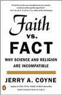
"The truth is not always halfway between two extremes: some propositions are flat wrong. In this timely and important book, Jerry Coyne expertly exposes the incoherence of the increasingly popular belief that you can have it both ways: that God (or something God-ish, God-like, or God-oid) sort-of exists; that miracles kind-of happen; and that the truthiness of dogma is somewhat-a-little-bit-more-or-less-who’s-to-say-it-isn’t like the truths of science and reason."Steven Pinker - The improbability of God.
In addition for Christianity, the doctrine of Trinity says it exists as three persons where two have a relation father-son. - The impossibility of an Omnipotent, Omniscient and Omnipresent God.
See Wikipedia Omnipotence paradox, Problem of evil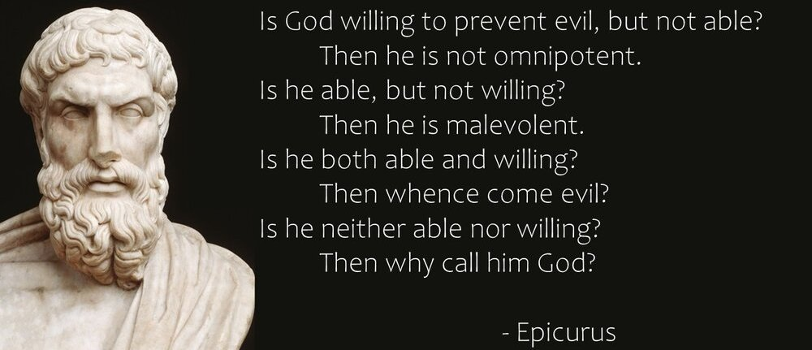
- The whole story is silly.
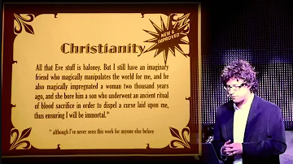
God's sudden incarnation in a man who would have revealed himself solely to a handful of fishermen for 12 months!
See Richard Carrier - Testing Religion Claims with Science and History - The first apostles knew Jesus by being transported to one of the seven layers of Heaven.
Any person claiming such things today is considered nuts. -
"The way to change the world is to change people's minds. As more and more people openly discuss the fact that "God" and "Allah" are completely imaginary, the world becomes a better place. The people who believe in "religion" look sillier and sillier. Eventually, religion becomes a fringe activity that is meaningless."Marshall David Brain
- Scientific evidence of a gigantic universe and the formation of our solar system wiped out many biblical claims including its own model of the universe See Biblical cosmology.
- A Theologian reserved domain that Science should not touch
"What are these ultimate questions in whose presence religion is an honoured guest and science must respectfully slink away?... What expertise can theologians bring to deep cosmological questions that scientists cannot?... Why are scientists so cravenly respectful towards the ambitions of theologians, over questions that theologians are certainly no more qualified to answer than scientists themselves? It is a tedious cliché that science concerns itself with how questions, but only theology is equipped to answer why questions....Perhaps there are some genuinely profound and meaningful questions that are forever beyond the reach of science. Maybe quantum theory is already knocking on the door of the unfathomable. But if science cannot answer some ultimate question, what makes anybody think that religion can?"R. Dawkins The God DelusionAnd, one might add, which religion? Which moral guide? Which chapter of an inconsistent and contradictory Bible?
No AfterlifeScience disproves the separation or "duality" of soul and body, of spirit and matter. The rise of the role of the brain (Wikipedia) and its understanding allows us to explain most of human's thoughts & behaviors.- Evolution, Genetics & Paleontology tell us that our ancestors were sponges, without any neuron, 600 million years ago.
Wikipedia Evolution of the brain
At that time, Christianity acknowledges we had no soul.
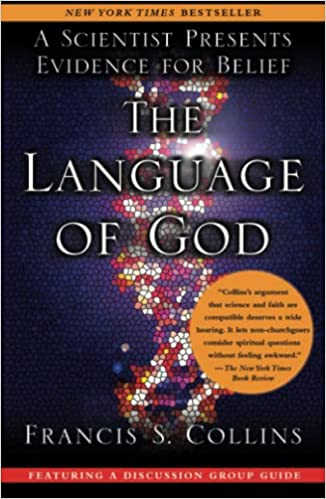
Francis Collins, a Christian physician-geneticist, suggests in his bestseller book The Language of God: A Scientist Presents Evidence for Belief that God was waiting for us to reach a certain level of intelligence."After evolution had prepared a sufficiently advanced “house” (the human brain), God gifted humanity with the knowledge of good and evil (the Moral Law), with free will, and with an immortal soul."See The strange case of Francis Collins by Samuel HarrisThis doesn't pass any of our razors: Occam, Hitchens and Sagan.- How strange it would be that someone has a soul but not his parents or siblings?
- What kind of silly purpose God is pursuing by suddenly injecting a soul in some living beings but not others?
- Do we have to accept that people with a deficient brain don't have a soul?
- What about other animals who also have a high cerebral capacity?
Top 20 animal species by forebrain(cerebrum or pallium)
(=cerebral cortex)neurons
(billions)Killer whale 43.1 Long-finned pilot whale 37.2 Short-finned pilot whale 35 Risso's dolphin 18.75 Human 18.67 Fin & Blue Whale 15 Common minke whale 12.8 Bottlenose dolphin 12.7 Beluga whale 10 Western gorilla 9.1 Cuvier's beaked whale 9.1 Orangutan 8.3 Chimpanzee 7.4 Bonobo 7.3 Asian elephant 6.78 Short-beaked common dolphin 6.7 African elephant 5.6 Southern elephant seal 4 Walrus 3.93 Mandrill 3.1 Source Wikipedia
List of animals by number of neurons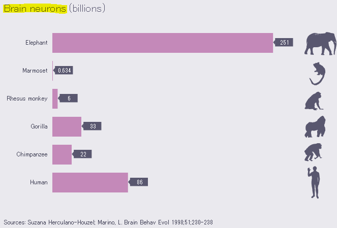
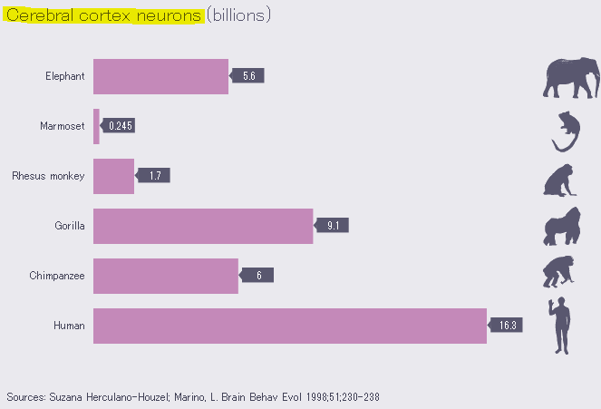
- Neuroscience shows that the thinking process is based on a flow of energy that we can measure somewhere in our 90 billion neurons.
Thoughts, memory, emotion, reasoning, moral or social judgments, love...
are the result of electrical impulses & chemical reactions deep inside our nervous system.
Different parts of the brain perform different functions.
When one is damaged, you lose its service but not the rest.
All this lets us think that without a functional material brain, thoughts are not possible.
See Wikipedia Neuroscience. - Behaviors like addiction, anxiety, depression... are part of Psychology which has no need of a soul or demons.
- Scientific experiments and Philosophy invalid the claim of libertarian Free Will which is incompatible with determinism.
According to this objection, if our actions aren’t causally determined, then our actions or crucial facts about our actions become matters of luck or chance in a way that undermines our free will. To illustrate, suppose that you have a choice between telling the truth or lying, and you decide to tell the truth. In order for your decision to be a free action, then, according to libertarians, it can’t be causally determined by past events. However, what follows from it not being causally determined is that it was open, up until the time you decided as you did, that you wouldn’t decide that way — that is, it was open, keeping everything else fixed up until that moment, that you would decide to lie instead.To appreciate the concern this raises, we can engage in a philosophical thought experiment. Given that your decision to tell the truth wasn’t causally determined, it follows that there’ll be a nearby possible world with the same laws of nature and with the same past up to the moment of decision in which you (or your counterpart) decide differently — you decide to lie rather than decide to tell the truth. But since the laws of nature and the past up to the time of decision are the same in both worlds, then there’s nothing about you — no change in your circumstances or change of mind — that could explain this difference in decision. And if there’s nothing that could explain this difference, then it seems that your deciding to tell the truth rather than deciding to lie is just a matter of (good) luck on your part. But if it’s just a matter of luck that you decided to tell the truth rather than deciding to lie, then surely your decision to tell the truth can’t be a freely-willed action.The idea of 'Sins' which depends on it, goes away at the same time.
...with the painful consequence of all of that is that the chance for an afterlife is extremely low.No Valid Refutation- 'Near Death Experiences', 'Out of Body Experiences', 'Spiritualism' and 'Past Lives Regression'The four kinds of counter-evidence usually offered for a life beyond matter and energy can be explained scientifically or dismissed as a scam. The two last ones don't even make any supernatural claim.
- Only Humans can show kindness, therefore we have a soul.
- We have plenty of examples in Nature of animals risking their life to save others, including across species.
15 Unbelievable Animals That Saved Other Animals - Knowing all the wars, genocides and atrocities throughout human history, we have also demonstrated how selfish, cruel and bad we can be.
It can be said that Humans are prone to inter-group tolerance and friendship. This and altruism are explained by a long evolutionary process."the more two individuals are genetically related, the more sense (at the level of the genes) it makes for them to behave cooperatively with each other."The Selfish Gene R. Dawkins"That is, our morality is partly derived from our evolution in small bands of individuals who knew each other intimately. When that was the case, “reciprocal altruism” could evolve, and led to the kind of “innate” moral feelings that people like Francis Collins think can come only from God."Why Evolution is True: by Jerry CoyneFolllowing Paul Bloom and Jon Haidt, we can also acknowledge that human culture acts to both tame and filter out the more inimical behaviors that evolved to keep primate groups in harmony. - We have plenty of examples in Nature of animals risking their life to save others, including across species.
-
Atheists are Evil"No, I don't know that Atheists should be considered as citizens, nor should they be considered patriots.
This is one nation under God." George H.W. BushAtheists, according to some theistic claims, should commit more crimes than the rest of the population; yet this is anything but true.The United States, "unique among wealthy democracies in its level of religious adherence, is also uniquely beleaguered by high rates of homicide, abortion, teen pregnancy, sexually transmitted disease, and infant mortality."The same comparison holds true within the U.S.:"states characterized by the highest levels of religious literalism are especially plagued by the above indicators of societal dysfunction."Sam Harris Letter to a Christian NationThe old saw that Hitler, Stalin, Pol Pot, etc., "spring from the womb of atheism" can also easily be dismissed."The problem with such tyrants is not that they reject the dogma of religion, but that they embrace other life-destroying myths.... Auschwitz, the Soviet gulags, and the killing fields of Cambodia are not examples of what happens to people when they become too reasonable. To the contrary, these horrors testify to the dangers of political and racial dogmatism. It is time that Christians like yourself stop pretending that a rational rejection of your faith entails the blind embrace of atheism as a dogma. One need not accept anything on insufficient evidence to find the virgin birth of Jesus to be a preposterous idea. The problem with religion—as with Nazism, Stalinism, or any other totalitarian mythology—is the problem of dogma itself. I know of no society in human history that ever suffered because its people became too desirous of evidence in support of their core beliefs.”Sam Harris Letter to a Christian NationMoreover, Hitler was Christian and the Holocaust was a direct inheritance from medieval Christianity's treatment of the Jews as heretics and Christ-killers.
See the New Atheists: R. Dawkins, S. Harris, C. Hitchens, D. Dennett, V. Stenger, Ayaan Hirsi Ali...The God of the Gap"God of the gaps" is a theological concept that emerged in the 19th century and revolves around the idea that gaps in scientific understanding are regarded as indications of the existence of God. This perspective has its origins in the observation that some individuals, often with religious inclinations, point to areas where science falls short in explaining natural phenomena as opportunities to insert the presence of a divine creator. The term itself was coined in response to this tendency. This theological view suggests that God fills in the gaps left by scientific knowledge, and that these gaps represent moments of divine intervention or influence.Wikipedia God of the gaps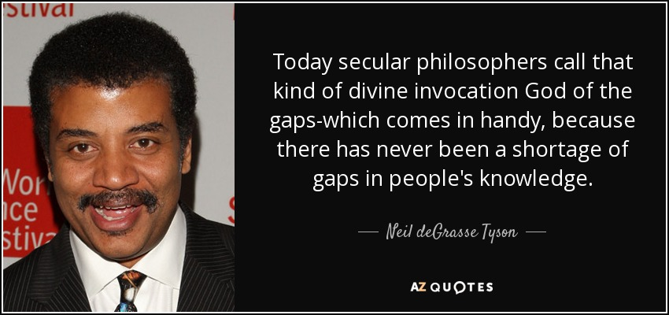
One of the most ardent defender for this kind of God is Stephen C. Meyer, an undergraduate in science (BS) with a Ph.D. in history and philosophy of science (1991). He was a founder of the Center for Science and Culture (CSC) of the Discovery Institute (DI), a conservative Christian think tank in the United States which is the main organization behind the intelligent design movement. Nearly all of prominent proponents of intelligent design are either CSC advisors, officers, or fellows.Wikipedia Stephen C. Meyer and Center for Science and Culture
A Youtube video review
Can This Man PROVE That God Exists? Piers Morgan vs Stephen MeyerP. Morgan is a convinced Christian and he failed here in his work of journalism. He never challenged his interviewee with the counter-arguments listed below. After 20 mn, the last 13 mn are unrelated to the existence of God. It is about Meyer being sad because his mother disappeared, like in a typical P. Morgan tabloid.
We will review here the Four (standards) Arguments given by S. Meyer:- The Bigbang
- The Fine Tune of the Universe
- The Origin of Life & the First Cell
- The Complexity of Life
For each of them, we will look at what science knows and hypothesis it can suggest when it doesn't.
1 - The BigbangA summary of our current knowledge in physicsTwo videos about the Standard Model.BBC Earth The physics that tells us what the Universe isTwo videos about the Bigbang.Any hypothesis based on the Big Bang is speculativeThere are a lot of incertitude in the Big Bang theory which lies outside of our safe knowledge. Although it is undoubtedly our best hypothesis today, it could be proven wrong in the future. Among the reasons for this uncertainty is how science works: it is based on today's observations. Even though deductions can be applied to substantiate hypotheses, the more we go back in time, the less we know and the less it is reliable. This is especially true with the Big Bang that would have occured 13.7 billion years ago. So anything based on it has already a prior probability reduced by the own probability of the Big Bang.A Universe without BeginningThe Big Bang doesn't say what was there before it happened. The Universe may have existed in one form or another, so that the Big Bang is simply a transformation between two different states. Here, several hypotheses have been brought:- An infinite cycle of expansion, then contraction.
- A bubble of space-time Universe
Accordingly, if we the Universe didn't start with the Big Bang, the question remains "Why is there a Universe and not nothing?"A Universe from Quantum fluctuationA Future Answer2 - The Fine Tune of the UniverseSee the answers by R. Carrier:
- The Utter Destruction of the Fine Tuning Argument 2025
- and Why the Fine Tuning Argument Proves God Does Not Exist 20223 - The Origin of life & the First Cell4 - The Complexity of LifeAn Incredible Organism Is Evolving at Lightning Speed—Faster Than We Ever Imagined PossibleConclusion: a bad argument"God of the gaps" is a bad argument not only on logical grounds, but on empirical grounds: there is a long history of "gaps" being filled and the remaining gaps for God thus getting smaller and smaller, suggesting "we don't know yet" as an alternative that works better in practice; naturalistic explanations for still-mysterious phenomena always remain possible, especially in the future where research may uncover more information.RationalWiki God of the gapsID teached at school?"In October 2004, the Dover Area School District of York County, Pennsylvania, changed its biology teaching curriculum to require that intelligent design be presented as an alternative to evolution theory, and thatOf Pandas and People, a textbook advocating intelligent design, was to be used as a reference book....The ruling concluded that intelligent design is not science, and permanently barred the board from requiring teachers to denigrate or disparage the scientific theory of evolution, and from requiring ID to be taught as an alternative theory."I totally understand why someone finds the idea that the complexity of life, from our brain giving us thoughts and personality to our incredible body machine, came naturally by applying basic laws.But there are many other things in the nature hard to believe like:- Relativity tells you that your watch is going slower when you are in a plan.
- Many Quantic Physics claim are hard to believe.
With the progress of science, this God has lost many battles, yet, it is still the main argument for many believers.- Lightnings from Zeus
- Tides (still persistent at Fox News https://www.youtube.com/watch?v=wb3AFMe2OQY )
- The coming of the Seasons each year
- Formation of our solar system
- Movement of the planets, comets and moon
- ...
- Big Bang
- Intelligent Design
ResultTheory God's Manifestations % Wold
PopulationThis Study
ProbabilityCreated
UniverseCreated
LifeGives
SoulMoral &
Personal*Most Religions 
Negligible Supernatural 

10% 1% Intelligent Design 2% 1% Theist 3% 8% Naturalism 15% *A Personal God is a God who: - can talk to you and whom you can talk to.
- listens to prayers and regularly intervene to change the natural course of events in your favor.
- is moral and can judge our actions.
Religion vs. intellectual integrity"Such conflict [between science & religion] is unavoidable. The sucess of science often comes at the expense of religious dogma; the maintenance of religious dogma always comes at the expense of science.... The core of science is not controlled experiment or mathematical modeling; it is intellectual honesty. It is time we acknowledged a basic feature of human discourse: when considering the truth of a proposition, one is either engaged in an honest appraisal of the evidence and logical arguments, or one isn't. Religion is the one area of our lives where people imagine that some other standard of intellectual integrity applies"Sam Harris Letter to a Christian NationReferencesBooks:Websites:- Cruelty and Violence in the Bible
- How many has God killed?
- Which is more violent, the Bible or the Quran?
- Why Wont God Heal Amputees
- God is Imaginary
Videos:Cruelty from the Bible:God Is Imaginary series:Sam Harris decimates the arguments of Divine Command Theory and Christian doctrine based upon it"Religion is an area where we tolerate dogma completely uncritically...Sam Harris The End of Faith
Most religion have merely canonized a few products of ancient ignorance and derangement and passed them down to us as through they were primordial truths. This leaves billions of us believing what no sane person could believe on his own."To finish with a touch of humor, don't miss this page grouping many quotes from Ricky Gervais and Bertrand Russel.Open Popup menu to navigate other pages -